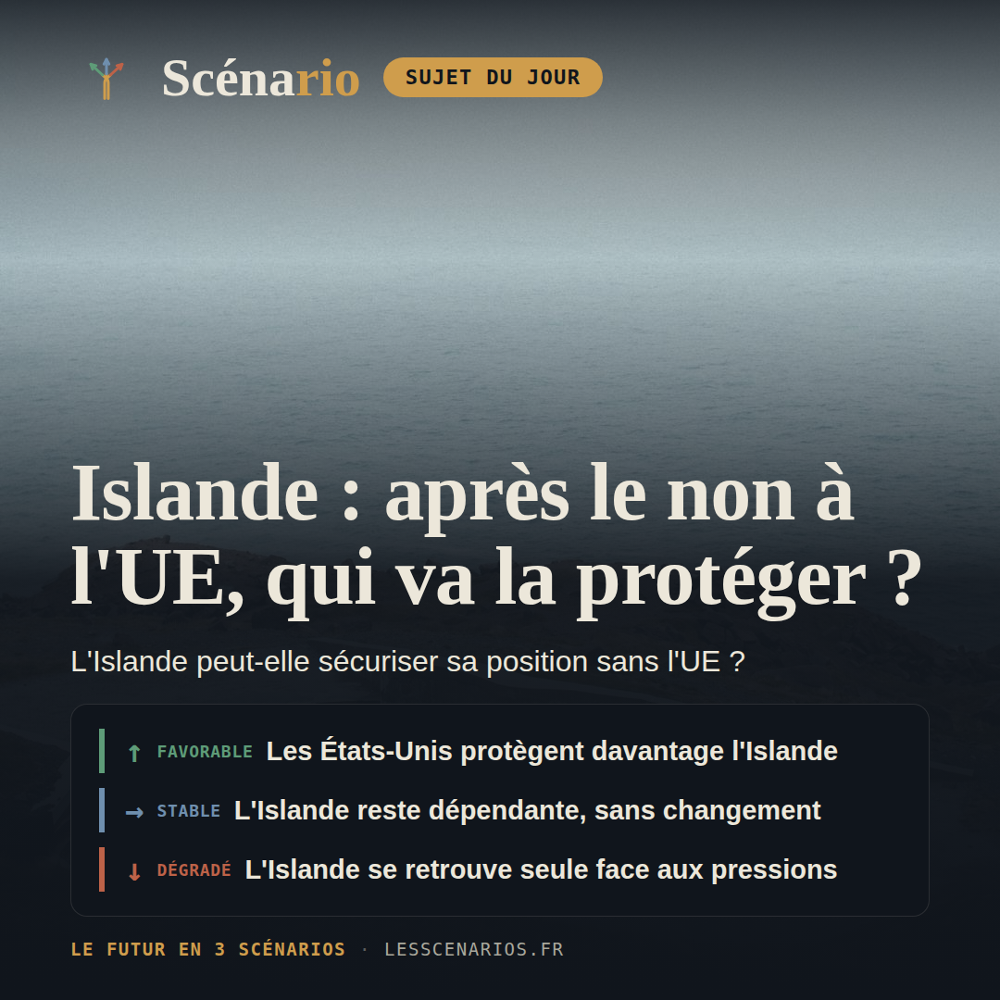
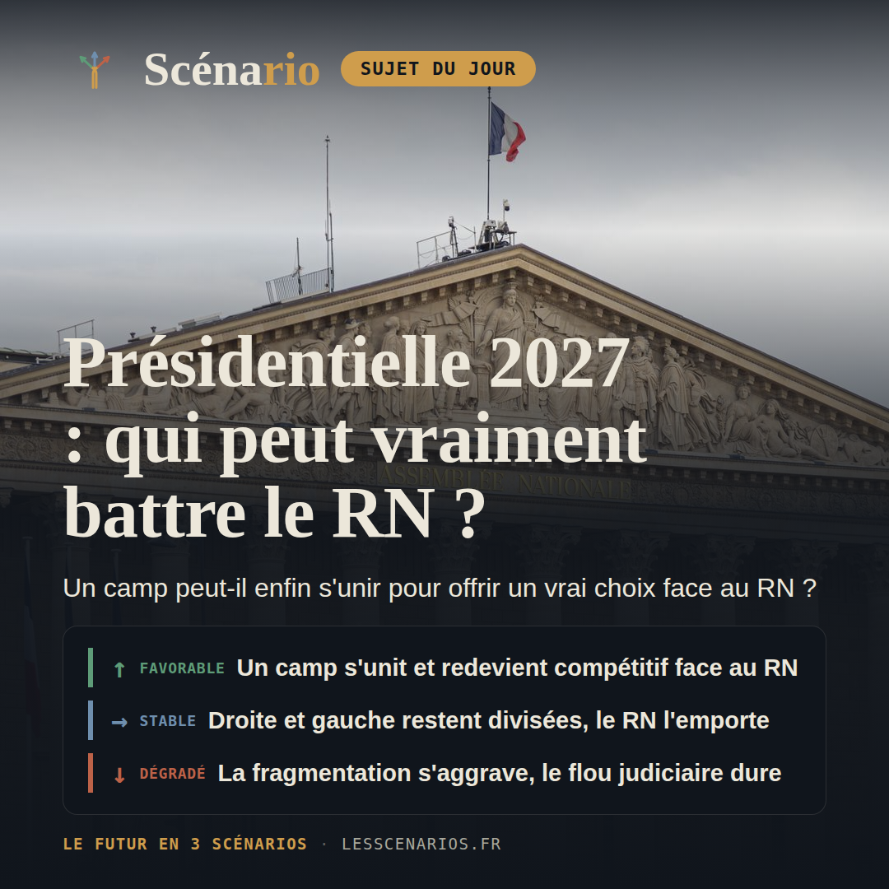
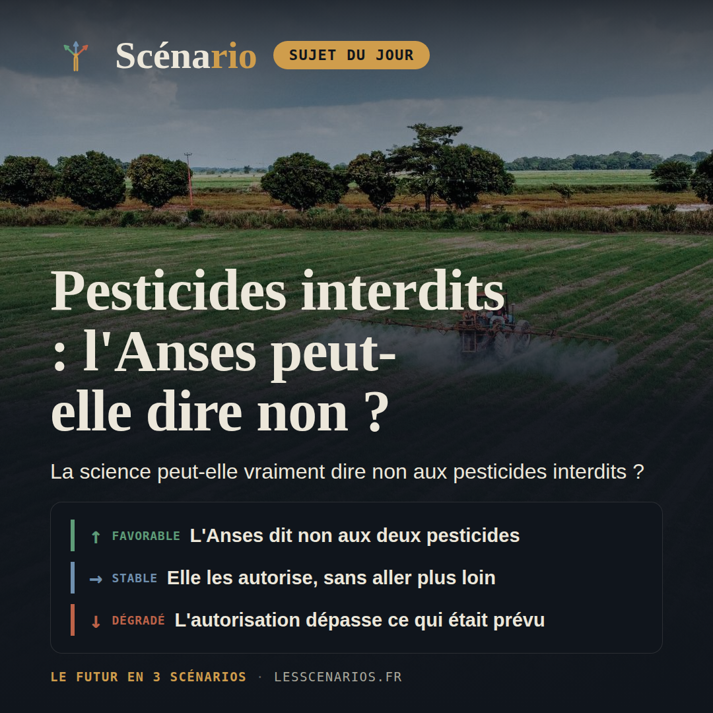
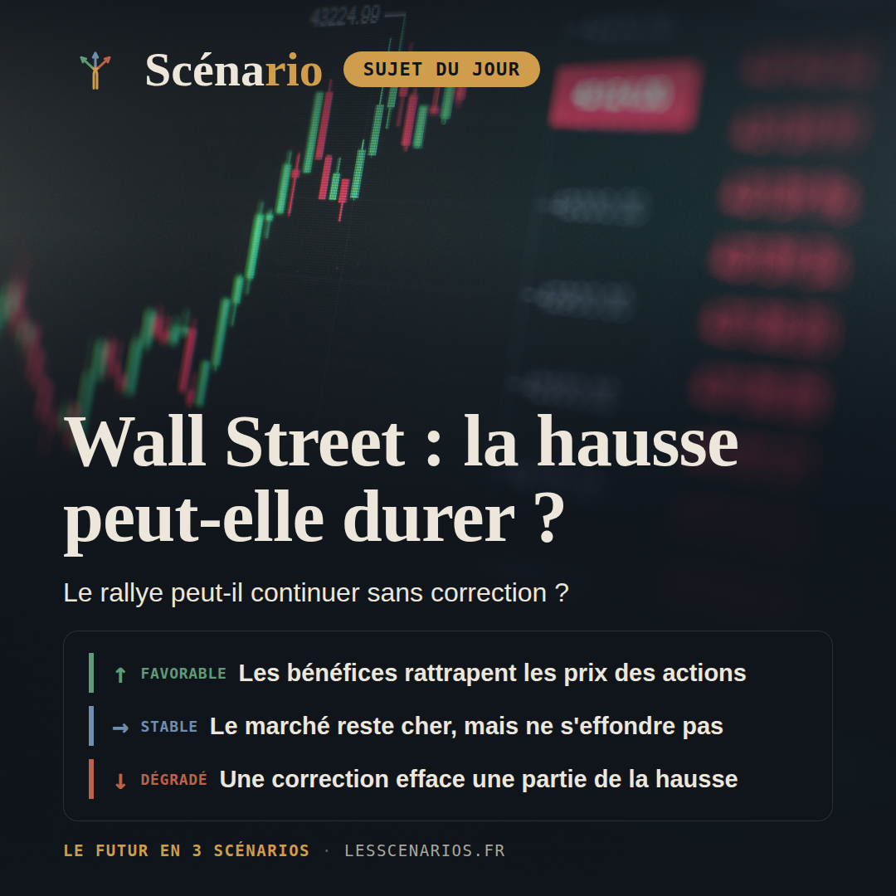
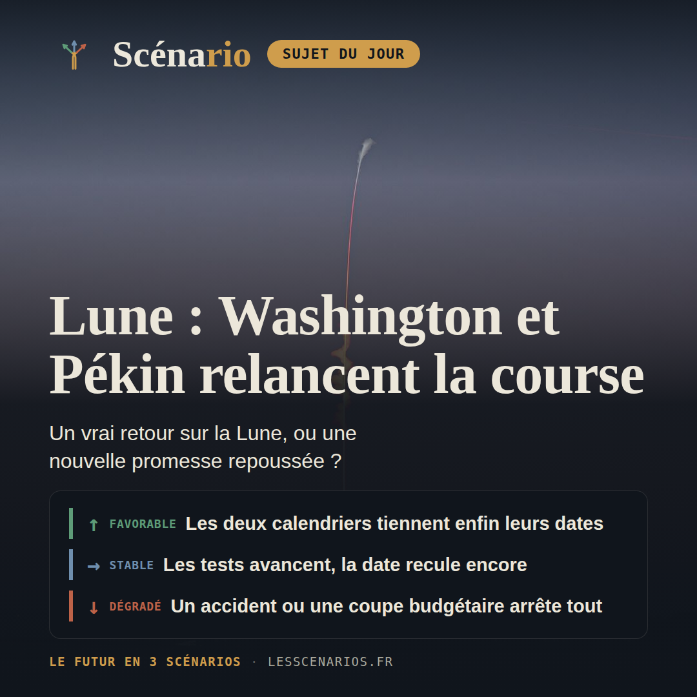
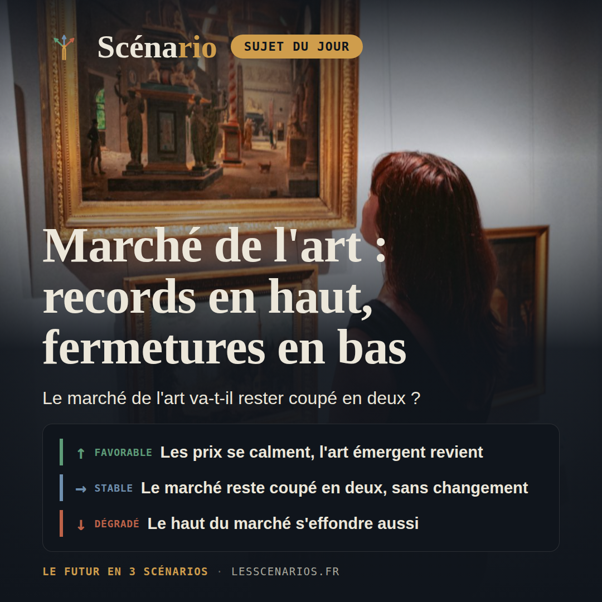
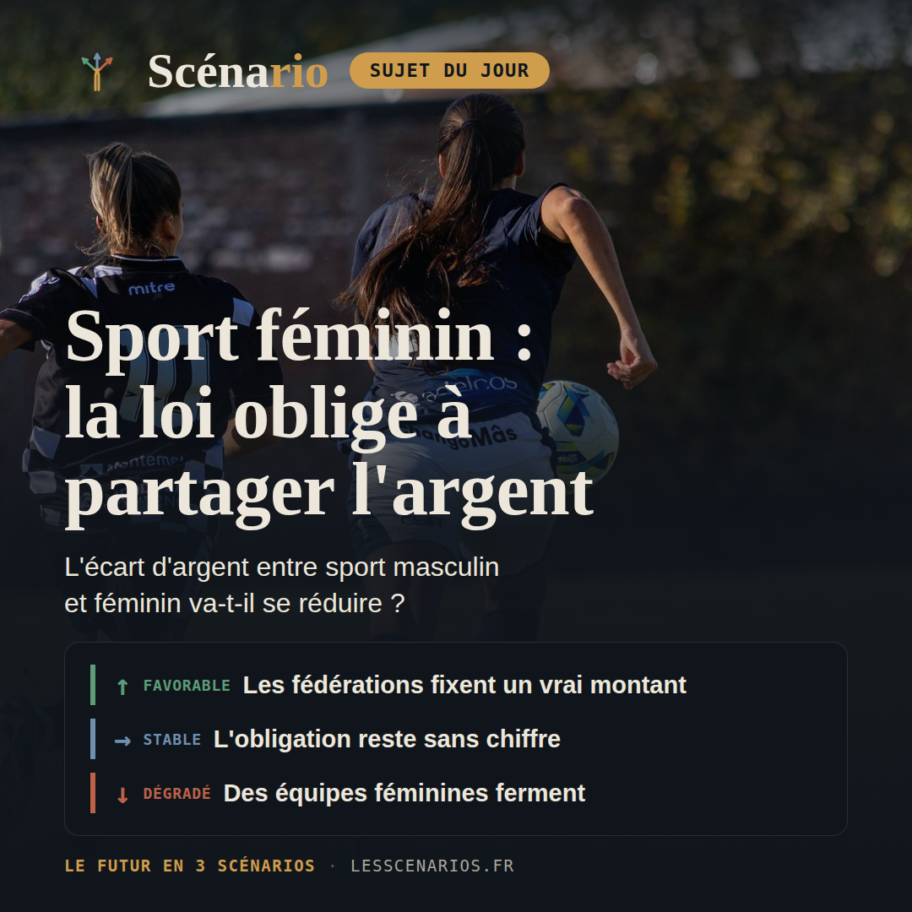

Récap hebdo
31 août au 6 septembre 2026 — sept sujets, sept fois trois scénarios chiffrés.
Conclusion de la semaine
Cette semaine, les sept dossiers avancent sans vraiment changer de trajectoire : en Islande, après le rejet référendaire du 29 août sur l'adhésion à l'UE, le nouveau plan de défense avec Washington progresse lentement, sans garantie écrite face à la pression de Trump sur le Groenland ; à huit mois du premier tour, Marine Le Pen reste large favorite (33-38% dans les sondages) face à une opposition toujours divisée ; l'Anses, saisie fin août pour statuer en deux mois sur deux pesticides bannis depuis 2018, s'apprête à trancher dans le périmètre exact voté par le Parlement, ni plus ni moins ; et à Wall Street, le CAPE ratio au plus haut depuis 1999 ne déclenche pour l'instant aucune correction. Le fil commun de la semaine : sept textes ou tendances déjà engagés qui se poursuivent sur leur lancée, sans qu'aucun ne bascule ni ne se dénoue vraiment.
Lundi, géopolitique

❓ Le 29 août, 52,8 % des Islandais ont rejeté la réouverture des négociations d'adhésion à l'Union européenne, alors que Donald Trump maintient la pression sur le Groenland voisin. Sans l'UE et sans armée propre, l'Islande peut-elle sécuriser durablement sa position dans l'Arctique en misant sur les États-Unis et l'OTAN, ou ce choix va-t-il l'isoler davantage face aux appétits stratégiques croissants sur la région ?
30% Les États-Unis et l'OTAN renforcent leur protection de l'Islande
Washington et l'OTAN accélèrent leur soutien à l'Islande (Helguvik, dépenses de défense en hausse), malgré les tensions ouvertes par Donald Trump sur le Groenland voisin.
45% L'Islande reste dépendante des États-Unis, sans garantie renforcée
Le nouveau plan de défense islandais avance lentement, sans nouvel engagement écrit de Washington ni clarification sur le Groenland.
25% L'Islande se retrouve isolée face aux pressions sur le Groenland
Donald Trump durcit sa pression sur le Groenland voisin, laissant l'Islande, seul pays de l'OTAN sans armée, prise entre deux feux et sans filet européen.
Mardi, carte blanche

❓ À huit mois du premier tour, Marine Le Pen domine tous les sondages (33-38 %) : la droite et la gauche, toujours divisées, peuvent-elles aligner un candidat capable de la battre au second tour ?
20% La droite ou la gauche s'unit et repasse devant le RN au second tour
Un camp finit par se ranger derrière un seul nom, capte les voix aujourd'hui dispersées, et redevient compétitif face au RN sans que ce dernier ne progresse.
50% Droite et gauche restent divisées, le RN l'emporte comme prévu
Le paysage reste fragmenté comme aujourd'hui : le candidat qualifié face au RN au second tour perd, dans des proportions proches des sondages actuels.
30% La fragmentation s'aggrave et l'incertitude judiciaire dure jusqu'au vote
Aucun camp ne perce, la Cour de cassation n'a toujours pas tranché le pourvoi de Marine Le Pen, et l'élection bat le record de fragmentation des dernières décennies.
Mercredi, actualité française

❓ Saisie fin août 2026, l'Anses dispose de deux mois pour juger l'acétamipride et le flupyradifurone, bannis depuis 2018 : peut-elle vraiment leur dire non ?
25% L'Anses refuse la dérogation, faute de garanties suffisantes
Saisie fin août 2026, l'Anses dispose de deux mois pour statuer — un délai que des agents internes jugent intenable pour une évaluation sérieuse. Faute de garanties suffisantes sur le risque sanitaire ou environnemental, l'agence refuse la dérogation pour les deux substances, ou ne l'accorde que sous une forme si restreinte qu'elle reste inapplicable en pratique.
45% L'Anses accorde la dérogation, mais seulement pour les filières prévues
L'Anses valide, dans les deux mois, une dérogation encadrée dans exactement le périmètre voté par le Parlement — noisettes, betteraves sucrières, cerises et pommes — pour une durée maximale de trois ans. Générations Futures saisit le Conseil d'État, sans obtenir de suspension avant les premières utilisations au champ.
30% La dérogation s'étend au-delà des filières prévues par la loi
D'autres filières agricoles en difficulté réclament le même traitement en s'appuyant sur le précédent noisette, et un nouveau texte ou un nouvel arrêté élargit la liste des filières ou des pesticides couverts — le scénario que redoutait Monique Barbut en menaçant de démissionner.
Jeudi, économie & finance mondiale

❓ Malgré un CAPE ratio au plus haut depuis 1999 et une dette sur marge record, Wall Street enchaîne les records : le rallye tient-il sur des bases solides ?
20% Les bénéfices de l'IA finissent par rattraper les prix
Les résultats trimestriels des géants de l'IA, attendus fin octobre, dépassent les attentes et la demande des entreprises s'élargit au-delà des géants technologiques. Les bénéfices du S&P 500 progressent assez vite pour rattraper des prix déjà élevés, et le CAPE ratio se stabilise autour de 38 à 40.
45% Le marché reste cher, mais ne casse pas
Aucun choc ne vient crever la bulle, mais aucune preuve solide ne vient non plus justifier des prix aussi élevés. Le S&P 500 progresse par à-coups, tiré par quelques valeurs technologiques, et le CAPE ratio se maintient autour de 40 à 44.
35% Une correction sévère efface une partie de la hausse
Un signal déjà visible — repli de la dette sur marge, résultats décevants d'un géant de l'IA, ou taux à 30 ans au-dessus de 5 % — finit par déclencher la correction : le S&P 500 recule de 10 à 20 % depuis son record de l'été.
Vendredi, sciences

❓ Après cinq reports depuis 2019, la NASA vise 2028 et la Chine 2030 pour ramener des humains sur la Lune : cette fois sera-t-elle la bonne ?
20% Les deux calendriers tiennent enfin leurs dates
New Glenn revole, Starship réussit son ravitaillement en orbite, et Artemis IV pose deux astronautes américains sur la Lune en 2028 comme annoncé, pendant que la Chine tient son cap de 2030.
50% Les essais avancent, le calendrier recule une fois de plus
Les tests techniques progressent des deux côtés sans échec majeur, mais la date du premier alunissage humain glisse une nouvelle fois, comme les cinq précédentes depuis 2019.
30% Un accident ou une coupe budgétaire arrête un programme
Un nouvel échec technique grave ou un changement politique coupe les financements, repoussant le premier alunissage humain au-delà de 2032, voire le suspendant sans nouvelle date.
Samedi, culture

❓ Ventes record chez Christie's et Sotheby's, mais art émergent en chute depuis quatre ans : le marché de l'art change-t-il durablement d'époque ?
15% Le marché se rééquilibre vers les artistes émergents
Le rallye du sommet s'essouffle une fois les grandes collections absorbées, et les acheteurs, échaudés par des prix jugés trop hauts, reviennent vers des artistes plus jeunes et des prix plus abordables.
55% Le haut et le bas du marché continuent de diverger
Le sommet du marché continue de battre des records, porté par une poignée de très grandes fortunes et par la dette, pendant que l'art ultra-contemporain enchaîne une cinquième année de baisse, sans krach ni rebond.
30% Le haut du marché se retourne, la crise devient générale
Le sommet du marché, soutenu par des garanties et par la titrisation de prêts adossés à des œuvres d'art, se retourne à son tour, entraînant les maisons de ventes et accélérant les fermetures de galeries de taille moyenne.
Dimanche, sport

❓ La loi du 3 août 2026 impose une solidarité financière entre sport masculin et féminin, sans fixer de montant : l'écart de moyens va-t-il vraiment se réduire ?
20% Les fédérations fixent un montant et les budgets féminins augmentent
Les décrets paraissent et le rapport annuel oblige chaque fédération à publier un chiffre. Une ou deux grandes fédérations annoncent un pourcentage de reversement précis, et les budgets de l'élite féminine progressent nettement plus vite qu'aujourd'hui.
50% L'obligation reste sans montant et les budgets bougent à peine
Le rapport annuel décrit des actions plutôt que des sommes, et rien n'est comparable d'une fédération à l'autre. Les budgets féminins montent de quelques points par an, comme avant la loi, et l'écart de moyens reste au même niveau.
30% L'argent du sport masculin recule et d'autres équipes féminines ferment
Les recettes du sport professionnel masculin baissent encore, les clubs réduisent ce qu'ils versent à leur section féminine et la solidarité se limite au rapport annuel. D'autres équipes suivent le chemin du Dijon FCO, exclu des compétitions cet été.